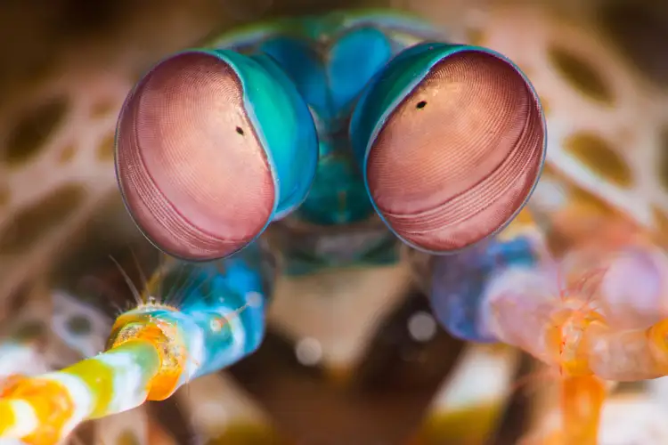
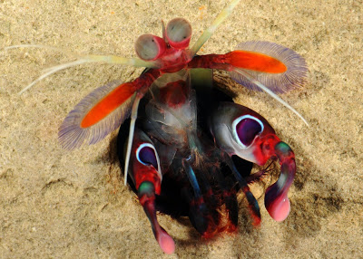

Fatos sobre o Stomatopoda
Descrição
Stomatopoda (ou estomatópode), (Odontodactylus scyllarus) chamados popularmente de tarturagas ou de lacraias-do-mar no Brasil, é uma ordem de crustáceos marinhos da subclasse Hoplocarida, que agrupa cerca de 400 espécies, caracterizadas principalmente pela morfologia da segunda pata torácica, que é modificada em apêndice subquelado, lembrando uma pata de louva-a-deus. É caracterizado por ser extremamente agressivo, presente há 400 milhões de anos atrás.
| Reino | Filo | Subfilo | Classe | Subclasse | Ordem |
|---|---|---|---|---|---|
| Animalia | Arthropoda | Crustacea | Malacostraca | Hoplocarida | Crustáceos |
Visão
Os estomatópodes têm a visão mais complexa do reino animal, superando até a das borboletas . O camarão mantis tem olhos compostos montados em talos e pode girá-los independentemente um do outro para examinar seus arredores. Enquanto os humanos têm três tipos de fotorreceptores, os olhos do camarão mantis têm entre 12 e 16 tipos de células fotorreceptoras. Algumas espécies podem até ajustar a sensibilidade de sua visão de cores.
Comportamento
No que diz respeito ao comportamento destas feras dos recifes, pode-se dizer que são seres muito agressivos e territoriais, não toleram a presença de qualquer animal próximo às suas tocas e se o fazem é por um tempo muito limitado. Peixes, caranguejos, polvos, ouriços dor mar, estrelas do mar, holotúrias e outras tamarutacas são imediatamente expulsas, mesmo que sejam apenas inocentes transeuntes. Geralmente investem com seu corpo e com velocidade sobre os intrusos, afastando-os ao assustá-los, mas outras vezes recorrem à violência, dando lhes golpes com as patas dianteiras modificadas e atordoando a estes.
